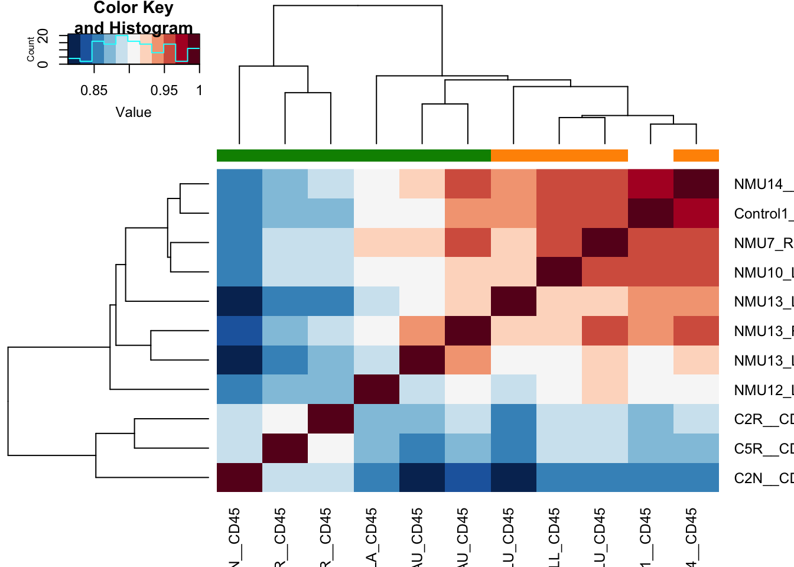

Chapter 18 Immune estimation
In this section, we will look at Deconvolution methods (CIBERSORT, TIMER etc) for estimating immune fractions and cell types
Deconvolution was performed using the TIMER website, which lists results from TIMER, XCELL, CIBERSORT, EPIC, MMPCOUNTER
TPM counts were used for this analysis (using Rat gene names) on the TIMER website ()
ProgSpecCD45=read.csv("../data/RNA_expression/CD45_TPM_rgd_names_prog_12-08_estimation_matrix.csv")
colnames(ProgSpecCD45)=gsub("X", "", colnames(ProgSpecCD45))
CharSpecCD45=read.csv("../data/RNA_expression/CD45-tpm-rgdnames-char-2020-11-22-estimation_matrix.csv")
colnames(CharSpecCD45)=gsub("X", "", colnames(CharSpecCD45))
## merge the two together
output1=merge(ProgSpecCD45, CharSpecCD45, by.x="cell_type", by.y="cell_type", all=T)18.1 Overview of the cell types
Below, we will look at the enrichment scores of specific cell types compared to others using these different methods. It appears that most methods have scores which skews towards high representation of T cells:
TIMER for example shows an enrichment of dendritic and CD8 T cells. EPIC in contrast shows enrichment for CD4+ and to a lesser extend CD8 T cells MMPCOUNTER puts an unusually large weighting to T cells and this does not fit our FACS analysis XCELL enriches for T cells
RowNames=c("TIMER", "CIBERSORT$", "CIBERSORT-ABS", "EPIC", "MMCPCOUNTER", "XCELL")
Type=c("enrichment", "fraction", "enrichment", "fraction", "enrichment", "enrichment")
par(mfrow=c(3, 2))
for (i in 1:length(RowNames)){
timSamples=output1[grep(RowNames[i], output1$cell_type), ]
rownames(timSamples)=sapply(strsplit(as.character(timSamples$cell_type), "_"), function(x) x[1])
boxplot(t(timSamples[ ,-1]), las=2, main=RowNames[i], ylab=Type[i])
}
18.2 characterisation cohort: assoc with size
Associations with size? Perform a correlation test between all of the information above and tumor size.
We obtain a matrix which is colored with a coefficient correlation (red is associative, blue is negatively associated). Correlations which are significant are marked with an asterisk:
sizeInfo=infoTableFinal$TumSize[match(colnames(CharSpecCD45)[-1], rownames(infoTableFinal))]
CorVals=rep(NA, nrow(CharSpecCD45))
names(CorVals)=CharSpecCD45$cell_type
CorValsP=CorVals
CorVals=sapply(1:nrow(CharSpecCD45), function(x) cor(t(CharSpecCD45[x, -1]), sizeInfo, use="complete"))
CorValsP=sapply(1:nrow(CharSpecCD45), function(x) cor.test(t(CharSpecCD45[x, -1]), sizeInfo, use="complete")$p.value)
naidx=which(CorValsP<0.05)
RNames1=sapply(strsplit(CharSpecCD45$cell_type, "_"), function(x) x[1])
RNamesMethod=sapply(strsplit(CharSpecCD45$cell_type, "_"), function(x) x[2])
df2=data.frame(cell=RNames1, method=RNamesMethod, cor=CorVals, p=CorValsP)
ax1=acast(df2[ ,c(1:3)], RNames1~RNamesMethod)
#df2=data.frame(cell=RNames1, method=RNamesMethod, cor=CorValsP)
ax2=acast(df2[ ,c(1:2, 4)], RNames1~RNamesMethod)
ax2[which(ax2>0.1, arr.ind=T)]=0
ax2[which(is.na(ax2), arr.ind = T)]=0
#par(oma=c(3, 5, 2, 2))
#OutputplotFun(ax1, scaleR="none", main="cell type correlation", classN="no", sigMat=ax2)
## Also plot these all separately
sizeInfoCut=infoTableFinal$SizeCat[match(colnames(CharSpecCD45)[-1], rownames(infoTableFinal))]
ttestVal=sapply(1:nrow(CharSpecCD45), function(x) wilcox.test(t(CharSpecCD45[x, -1])~sizeInfoCut)$p.value)
df3=data.frame(cell=RNames1, method=RNamesMethod, cor=ttestVal)
ax3=acast(df3, RNames1~RNamesMethod)
ax3[which(ax3>0.1, arr.ind=T)]=0
ax3[which(is.na(ax3), arr.ind = T)]=0The above matrices are sparse, and we can zoom in on specific methods to see whether there is an association
#pdf("~/Desktop/2F_characterisation_association_size_immune_types.pdf", width=8, height=3)
par(mfrow=c(2,2))
for (i in 1:ncol(ax1)){
t1=ax1[, i]
t2=which(!is.na(t1))
image(cbind(ax1[t2, i],ax1[t2, i]), col=RdBu[11:1], xaxt="none", yaxt="none",
main=sprintf("correlation %s (* sig p<0.1)", colnames(ax1)[i]))
axis(1, at=seq(0, 1, length=length(t2)), names(t1)[t2], las=2, cex=0.7)
axis(2, at=c(0,1),c("cor p", "wilcox p"), las=2, cex=0.7)
mx=which(ax2[ t2,i]>0)
text((mx-1)/(length(t2)-1), 0 , "*")
mx=which(ax3[ t2,i]>0)
text((mx-1)/(length(t2)-1), 1 , "*")
}Figure 18.1: correlation coefficient values
write.csv(df2, file="nature-tables/2f_correlation_coefficients_pvalues.csv")
#write.csv(ax1, file="nature-tables/2f_correlation_coefficients.csv")
#dev.off()Figure 18.2: correlation coefficient values
These accompany the following plots with individual samples:
#pdf("~/Desktop/2F-sample-celltypes.pdf", height=6, width=7)
x2=c(colnames(CharSpecCD45)[order(sizeInfo)+1])
ax1=grep("TIMER", CharSpecCD45$cell_type)
T1melt=melt(CharSpecCD45[ax1, ])
T1melt$variable=factor(T1melt$variable, x2)
T1melt$NewID=infoTableFinal$TumorIDnew[match(T1melt$variable, rownames(infoTableFinal))]
ggplot(T1melt, aes(x=NewID, y=value, fill=cell_type))+geom_bar(stat="identity")+
ggtitle("TIMER:char cohort separately")+theme(axis.text.x = element_text(angle = 90))+
scale_fill_manual(values=c("#66C2A5", "#FED976", "#FEEBE2" ,"#AE017E", "#2171B5", "#BDD7E7", "#EFF3FF"))+theme_bw()+theme(axis.text.x = element_text(angle = 90))
Figure 18.3: TIMER
And below is the result for CIBERSORT
ax1=grep("CIBERSORT$", CharSpecCD45$cell_type)
T1melt=melt(CharSpecCD45[ax1, ])
T1melt$variable=factor(T1melt$variable, x2)
ggplot(T1melt, aes(x=variable, y=value, fill=cell_type))+geom_bar(stat="identity")+
ggtitle("CIBSERT:char cohort separately")+theme(axis.text.x = element_text(angle = 90))+theme_bw()+
theme(axis.text.x = element_text(angle = 90))
# Also do a version where the Bcells, Macrophages,NK, Mast Cells, CD4, CD8 Cells are merged together, NK
T1melt$cell_type2=substr(T1melt$cell_type, 1, 4)
T1melt$cell_type2[grep("CD8", T1melt$cell_type)]="T CD8"
T1melt$cell_type2[grep("CD4", T1melt$cell_type)]="T CD4"
ggplot(T1melt, aes(x=variable, y=value, fill=cell_type2))+geom_bar(stat="identity")+
ggtitle("CIBSERT:char cohort separately")+theme(axis.text.x = element_text(angle = 90))+
scale_fill_manual(values=c("#66C2A5", "#E6F598", "#FED976", "#FC4E2A", "#bdbdbd", "#FEEBE2" ,"#AE017E", "#5E4FA2", "#2171B5", "#BDD7E7", "#EFF3FF"))+theme_bw()+theme(axis.text.x = element_text(angle = 90))
T1melt$sdat=paste(T1melt$variable, T1melt$cell_type2, sep=".")
T2=by(T1melt$value, T1melt$sdat, sum)
T2m=stack(T2)
T2m$ind1=sapply(strsplit(as.character(T2m$ind), "\\."), function(x) x[1])
T2m$ind2=sapply(strsplit(as.character(T2m$ind), "\\."), function(x) x[2])
T2mTab=acast(T2m[ ,c(1, 3:4)], ind2~ind1, value.var="values")
CorV=sapply(1:nrow(T2mTab), function(x) cor(T2mTab[x, ], sizeInfo, use="complete"))
CorVP=sapply(1:nrow(T2mTab), function(x) cor.test(T2mTab[x, ], sizeInfo, use="complete")$p.value)
wilP=sapply(1:nrow(T2mTab), function(x) wilcox.test(T2mTab[x, ]~ sizeInfoCut)$p.value)
# dev.off()
write.csv(T1melt, file="nature-tables/2f.csv")
18.3 Comparison with FACS data
In this section, we compare how well the estimates from RNAseq deconvolution methods associate with FACS data. Below is a heatmap showing the correlation coefficient of each cell type (by FACS) and the method,
Note that there are twice as manay samples with reliable myeloid derived cell information than for leukocytes.
## annotate the FACS data here
infoTableFinal$Name2=NA
infoTableFinal$Name2[which(infoTableFinal$Fraction=="CD45")]=paste(infoTableFinal$Rat_ID[which(infoTableFinal$Fraction=="CD45")], infoTableFinal$Location[which(infoTableFinal$Fraction=="CD45")], sep="")
m2=match(colnames(Fdata), infoTableFinal$Name2)
## get rid of the NA samples
naom=infoTableFinal$SampleID[m2[which(!is.na(m2))]]
mid=colnames(Fdata)[which(!is.na(m2))]
lx1=Fdata[, c(1, match(mid, colnames(Fdata)))]
out2=output1[, c(1,match(naom, colnames(output1)))]
#head(out2)
colnames(lx1)=colnames(out2)
# Run all the association tests here
## New Table
# -cd8
# Th
# Tregs
# B cells
# Macrophage
#
MergedTable=matrix(NA, ncol=21, nrow=1)
colnames(MergedTable)=colnames(out2)
tx1=sapply(strsplit(as.character(out2$cell_type), "_"), function(x) x[1])
MethodSumm=sapply(strsplit(as.character(out2$cell_type), "_"), function(x) x[2])
tabtx1=table(tx1)
TheseFracs=names(tabtx1)[which(tabtx1>3)]
testSetB=c("B cell", "MHCII-hi", "MHCII-lo", "Monocyte", "Neutrophil", "NK cells", "CD8", "Treg")
# "CD8", "Th", "Treg", "B cells", "NK cells", "DC", "Neutrophil", "Monocyte", "gd T", "MHCII-hi", "MHCII-lo")
testSet=TheseFracs[-2]#c("CD8", "CD4", "Treg", "B cell", "NK", "dendritic", "Neutrophil", "Monocyte", "gamma delta", "M1", "M2")
CMat=matrix(NA, nrow=length(testSet), ncol=length(unique(MethodSumm)))
rownames(CMat)=testSet
colnames(CMat)=unique(MethodSumm)
PMat=CMat
#testSet="M2"
#testSetB="MHCII-lo"
for (j in 1:length(testSet)){
CD8Table=rbind(lx1[grep(testSetB[j], lx1$cell_type), ],
out2[which(tx1==testSet[j]), ])
CD8Table[1,1]=paste(testSetB[j], "facs", sep="_")
ms=MethodSumm[which(tx1==testSet[j])]
par(mfrow=c(3,3))
cVals=sapply(2:nrow(CD8Table), function(x) cor(t(CD8Table[1, -1]), t(CD8Table[x, -1]), use="complete"))
cVals2=sapply(2:nrow(CD8Table), function(x) cor.test(t(CD8Table[1, -1]), t(CD8Table[x, -1]), use="complete")$p.value)
CMat[j, match(ms, colnames(CMat))]=cVals
PMat[j, match(ms, colnames(PMat))]=cVals2
MergedTable=rbind(MergedTable, CD8Table)
#for (i in 2:nrow(CD8Table)){
#a1=cor(t(CD8Table[1, -1]), t(CD8Table[i, -1]), use="complete")
#plot(t(CD8Table[1, -1]), t(CD8Table[i, -1]), main=CD8Table[i,1], ylab="method", xlab="FACS")
#text(min(t(CD8Table[1, -1]), na.rm=T)*2, max(t(CD8Table[i, -1]), na.rm=T), paste("r=", round(a1, digits=2), sep=""))
}
##for the following, find the terms and calculate the sum
testSetB=c("Macro", "Th", "B cell")
testSet=c("Macro", "CD4", "B cell")
rmThese=c("M0", "naive", NULL)
savTemp=matrix(NA, nrow=3, ncol=ncol(CMat))
rownames(savTemp)=paste("all", testSet, sep="")
savTempP=savTemp
for (j in 1:length(testSetB)){
CD8Table=lx1[grep(testSetB[j], lx1$cell_type), ]
CD8Table=colSums(CD8Table[, -1])
#rownames(CD8Table)="facs"
outB=out2[grep(testSet[j], out2$cell_type), ]
rm2=grep(rmThese[j], outB$cell_type)
if (length(na.omit(rm2))>0){
outB=outB[-rm2, ]
}
namOut=sapply(strsplit(as.character(outB$cell_type), "_"), function(x) x[2])
nam2=unique(namOut[which(duplicated(namOut))])
outC=sapply(nam2, function(x) colSums(outB[which(namOut==x), -1 ]))
outB=outB[-which(namOut%in%nam2), ]
rownames(outB)=sapply(strsplit(as.character(outB$cell_type), "_"), function(x) x[2])
allD=rbind(CD8Table, outB[, -1], t(outC))
rownames(allD)[1]="facs"
allD$method=rownames(allD)
# allD=data.matrix(allD)
#pdf(sprintf("rslt/Immune decomposition/correlations_combined_%s.pdf", testSetB[j]), width=10, height=10)
#ggplot(temp8, aes(x=method, y=value, col=variable))+geom_bar(stat="identity")+facet_wrap(~variable, scale="free_y")+theme(axis.text.x = element_text(angle = 90, vjust = 0.5, hjust=1))
par(mfrow=c(3,3))
for (i in 2:nrow(allD)){
a1=cor(t(allD[1, -ncol(allD)]), t(allD[i, -ncol(allD)]), use="complete")
a2=cor.test(t(allD[1, -ncol(allD)]), t(allD[i, -ncol(allD)]), use="complete")$p.value
savTemp[j, match(rownames(allD)[i], colnames(CMat))]=a1
savTempP[j, match(rownames(allD)[i], colnames(CMat))]=a2
# plot(t(allD[1, -ncol(allD)]), t(allD[i,-ncol(allD)]), main=allD[i,ncol(allD)], ylab="method", xlab="FACS")
# text(min(t(allD[1, -ncol(allD)]), na.rm=T)*2, max(t(allD[i, -ncol(allD)]), na.rm=T), paste("r=", round(a1, digits=2), sep=""))
}
cell_type=paste(testSetB[j], allD$method, sep="_all_")
MergedTable=rbind(MergedTable, cbind(cell_type, allD[ ,-21]))
}
CorMatAll=rbind(CMat, savTemp)
CorMatP=rbind(PMat, savTempP)
par(oma=c(2, 0,0,5))
heatmap.2(CorMatAll, col=RdBu[11:1], scale="none", trace="none", main="correlation FACS and GE")
We can plot associations between the different cell types below, here selecting:
- Bcells
- CD8 T cells
- M2 macophage
- M1 macrophage
with each method. The correlation coefficient is indicated.
testSetB=c("CD8", "B cells", "MHCII-hi", "MHCII-lo")
testSet=c("CD8", "B cell","M1", "M2")
par(mfrow=c(3,3))
for (j in 1:length(testSetB)){
CMat=matrix(NA, ncol=length(testSet), nrow=10)
CD8Table=rbind(lx1[grep(testSetB[j], lx1$cell_type), ],
out2[grep(testSet[j], out2$cell_type), ])
for (i in 2:nrow(CD8Table)){
a1=cor(t(CD8Table[1, -1]), t(CD8Table[i, -1]), use="complete")
plot(t(CD8Table[1, -1]), t(CD8Table[i, -1]), main=CD8Table[i,1], ylab="method", xlab="FACS")
text(min(t(CD8Table[1, -1]), na.rm=T)*2, max(t(CD8Table[i, -1]), na.rm=T), paste("r=", round(a1, digits=2), sep=""))
}
mtext(testSetB[j], side=3, line=-2, outer=T)
}


18.4 Progression cohort
We perform the same sort of analysis for the progression cohort:
# drop samples
#dsamp=c("2R_D_CD45", "3L_D_CD45")
sizeInfo=infoTableFinal$GrowthRate[match(colnames(ProgSpecCD45)[-1], rownames(infoTableFinal))]
CorVals=rep(NA, nrow(ProgSpecCD45))
names(CorVals)=ProgSpecCD45$cell_type
CorValsP=CorVals
CorVals=sapply(1:nrow(ProgSpecCD45), function(x) cor(t(ProgSpecCD45[x, -1]), sizeInfo, use="complete"))
CorValsP=sapply(1:nrow(ProgSpecCD45), function(x) cor.test(t(ProgSpecCD45[x, -1]), sizeInfo, use="complete")$p.value)
naidx=which(CorValsP<0.05)
RNames1=sapply(strsplit(ProgSpecCD45$cell_type, "_"), function(x) x[1])
RNamesMethod=sapply(strsplit(ProgSpecCD45$cell_type, "_"), function(x) x[2])
df2=data.frame(cell=RNames1, method=RNamesMethod, cor=CorVals, p=CorValsP)
ax1=acast(df2[ ,c(1:3)], RNames1~RNamesMethod)
#df2=data.frame(cell=RNames1, method=RNamesMethod, cor=CorValsP)
ax2=acast(df2[ ,c(1:2,4)], RNames1~RNamesMethod)
ax2[which(ax2>0.1, arr.ind=T)]=0
ax2[which(is.na(ax2), arr.ind = T)]=0
pdf("~/Desktop/4F_progression_association_growthrate_all_methods.pdf", width=8, height=6)
par(oma=c(2, 2, 2, 2))
OutputplotFun(ax1, scaleR="none", main="cell type correlation", classN="no", sigMat=ax2)
dev.off()
## quartz_off_screen
## 2
## Also plot these all separately
sizeInfoCut=infoTableFinal$Growth[match(colnames(ProgSpecCD45)[-1], rownames(infoTableFinal))]
ttestVal=sapply(1:nrow(ProgSpecCD45), function(x) wilcox.test(t(ProgSpecCD45[x, -1])~sizeInfoCut)$p.value)
df3=data.frame(cell=RNames1, method=RNamesMethod, cor=ttestVal)
ax3=acast(df3, RNames1~RNamesMethod)
ax3[which(ax3>0.1, arr.ind=T)]=0
ax3[which(is.na(ax3), arr.ind = T)]=0
#pdf("~/Desktop/4F_progression_association_growth_types.pdf", width=8, height=3)
par(mfrow=c(2,2))
for (i in 1:ncol(ax1)){
t1=ax1[, i]
t2=which(!is.na(t1))
image(cbind(ax1[t2, i],ax1[t2, i]), col=RdBu[11:1], xaxt="none", yaxt="none",
main=sprintf("correlation %s (* sig p<0.1)", colnames(ax1)[i]))
axis(1, at=seq(0, 1, length=length(t2)), names(t1)[t2], las=2, cex=0.7)
axis(2, at=c(0,1),c("cor p", "wilcox p"), las=2, cex=0.7)
mx=which(ax2[ t2,i]>0)
text((mx-1)/(length(t2)-1), 0 , "*")
mx=which(ax3[ t2,i]>0)
text((mx-1)/(length(t2)-1), 1 , "*")
}

Make the plots with individual samples. Firstly TIMER
#pdf("~/Desktop/4F-sample-celltypes-arranged_by_growth_rate.pdf", height=6, width=10)
x2=c(colnames(ProgSpecCD45)[order(sizeInfo)+1])
ax1=grep("TIMER", ProgSpecCD45$cell_type)
T1melt=melt(ProgSpecCD45[ax1, ])
T1melt$growth=infoTableFinal$Growth[match(T1melt$variable, infoTableFinal$SampleID)]
T1melt$treatment=infoTableFinal$Treatment[match(T1melt$variable, infoTableFinal$SampleID)]
T1melt$variable=factor(T1melt$variable, x2)
ggplot(T1melt, aes(x=variable, y=value, fill=cell_type))+geom_bar(stat="identity")+facet_grid(~growth, space="free_x", scale="free", drop=T)+ggtitle("TIMER:prog growth")+theme(axis.text.x = element_text(angle = 90))+
scale_fill_manual(values=c("#66C2A5", "#FED976", "#FEEBE2" ,"#AE017E", "#2171B5", "#BDD7E7", "#EFF3FF"))+theme_bw()+theme(axis.text.x = element_text(angle = 90))Figure 18.4: Progression CIBERSORT TIMER
then CIBERSORT
ggplot(T1melt, aes(x=variable, y=value, fill=cell_type))+geom_bar(stat="identity")+facet_grid(~treatment, space="free_x", scale="free", drop=T)+ggtitle("TIMER:prog treatment")+theme(axis.text.x = element_text(angle = 90))+
scale_fill_manual(values=c("#66C2A5", "#FED976", "#FEEBE2" ,"#AE017E", "#2171B5", "#BDD7E7", "#EFF3FF"))+theme_bw()+theme(axis.text.x = element_text(angle = 90))
ax1=grep("CIBERSORT$", ProgSpecCD45$cell_type)
T1melt=melt(ProgSpecCD45[ax1, ])
T1melt$variable=factor(T1melt$variable, x2)
T1melt$growth=infoTableFinal$Growth[match(T1melt$variable, infoTableFinal$SampleID)]
T1melt$treatment=infoTableFinal$Treatment[match(T1melt$variable, infoTableFinal$SampleID)]
ggplot(T1melt, aes(x=variable, y=value, fill=cell_type))+geom_bar(stat="identity")+facet_grid(~growth, space="free_x", scale="free")+
ggtitle("CIBSERT:char cohort separately")+theme(axis.text.x = element_text(angle = 90))+theme_bw()+
theme(axis.text.x = element_text(angle = 90))
ggplot(T1melt, aes(x=variable, y=value, fill=cell_type))+geom_bar(stat="identity")+facet_grid(~treatment, space="free_x", scale="free")+
ggtitle("CIBSERT:char cohort separately")+theme(axis.text.x = element_text(angle = 90))+theme_bw()+
theme(axis.text.x = element_text(angle = 90))
# Also do a version where the Bcells, Macrophages,NK, Mast Cells, CD4, CD8 Cells are merged together, NK
T1melt$cell_type2=substr(T1melt$cell_type, 1, 4)
T1melt$cell_type2[grep("CD8", T1melt$cell_type)]="T CD8"
T1melt$cell_type2[grep("CD4", T1melt$cell_type)]="T CD4"
ggplot(T1melt, aes(x=variable, y=value, fill=cell_type2))+geom_bar(stat="identity")+facet_grid(~growth, space="free_x", scale="free")+
ggtitle("CIBSERT:prog growth")+theme(axis.text.x = element_text(angle = 90))+
scale_fill_manual(values=c("#66C2A5", "#E6F598", "#FED976", "#FC4E2A", "#bdbdbd", "#FEEBE2" ,"#AE017E", "#5E4FA2", "#2171B5", "#BDD7E7", "#EFF3FF"))+theme_bw()+theme(axis.text.x = element_text(angle = 90))
ggplot(T1melt, aes(x=variable, y=value, fill=cell_type2))+geom_bar(stat="identity")+facet_grid(~treatment, space="free_x", scale="free")+
ggtitle("CIBSERT:prog treatment")+theme(axis.text.x = element_text(angle = 90))+
scale_fill_manual(values=c("#66C2A5", "#E6F598", "#FED976", "#FC4E2A", "#bdbdbd", "#FEEBE2" ,"#AE017E", "#5E4FA2", "#2171B5", "#BDD7E7", "#EFF3FF"))+theme_bw()+theme(axis.text.x = element_text(angle = 90))
T1melt$sdat=paste(T1melt$variable, T1melt$cell_type2, sep=".")
T2=by(T1melt$value, T1melt$sdat, sum)
T2m=stack(T2)
T2m$ind1=sapply(strsplit(as.character(T2m$ind), "\\."), function(x) x[1])
T2m$ind2=sapply(strsplit(as.character(T2m$ind), "\\."), function(x) x[2])
T2mTab=acast(T2m[ ,c(1, 3:4)], ind2~ind1, value.var="values")
CorV=sapply(1:nrow(T2mTab), function(x) cor(T2mTab[x, ], sizeInfo, use="complete"))
CorVP=sapply(1:nrow(T2mTab), function(x) cor.test(T2mTab[x, ], sizeInfo, use="complete")$p.value)
wilP=sapply(1:nrow(T2mTab), function(x) wilcox.test(T2mTab[x, ]~ sizeInfoCut)$p.value)
# image(cbind(CorV,CorV), col=RdBu[11:1], xaxt="none", yaxt="none",
# main="correlation CIBERSORT growth rate (* sig p<0.1)")
# axis(1, at=seq(0, 1, length=length(CorV)), rownames(T2mTab), las=2, cex=0.7)
# axis(2, at=c(0,1),c("cor p", "wilcox p"), las=2, cex=0.7)
# mx=which(CorVP<0.1)
# text((mx-1)/(CorVP-1), 0 , "*")
# mx=which(wilP<0.1)
# text((mx-1)/(wilP-1), 1 , "*")
#dev.off()
write.csv(T1melt, file="nature-tables/4f_image.csv")18.5 Clinical associations
18.5.1 Associate with Treatment
Look at association with treatment, growth and spatial infiltration for each method.
Associations with treatment:
- higher CD4, CD8 in most treatments
- growth: stable associated with higher CD8
- infiltration: more neutrophils and CD8? maybe CD4 cells
#sizeCutOff=7
MergedTablemelt=melt(MergedTable[-1, ])
MergedTablemelt$Treatment=infoTableFinal$Treatment[match(MergedTablemelt$variable, infoTableFinal$SampleID)]
MergedTablemelt$Growth=infoTableFinal$Growth[match(MergedTablemelt$variable, infoTableFinal$SampleID)]
MergedTablemelt$InfRes=infoTableFinal$MHcut[match(MergedTablemelt$variable, infoTableFinal$SampleID)]
MergedTablemelt$cell_type2=sapply(strsplit(MergedTablemelt$cell_type, "_"), function(x) x[1])
MergedTablemelt$method=sapply(strsplit(MergedTablemelt$cell_type, "_"), function(x) x[length(x)])
unValues=unique(MergedTablemelt$cell_type2)
CompTest=list()
for (i in 1:length(unValues)){
ax=MergedTablemelt[MergedTablemelt$cell_type2==unValues[i], ]
p<-ggplot(ax, aes(x=Treatment, y=as.numeric(value), col=Treatment))+geom_boxplot()+facet_wrap(~method, scale="free_y")+ggtitle(paste(unValues[i], "Treatment"))
print(p)
#p<-ggplot(ax, aes(x=Growth, y=as.numeric(value), col=Growth))+geom_boxplot()+facet_wrap(~method, scale="free_y")+ggtitle(paste(unValues[i], "Growth"))
#print(p)
#p<-ggplot(ax, aes(x=InfRes, y=as.numeric(value), col=InfRes))+geom_boxplot()+facet_wrap(~method, #scale="free_y")+ggtitle(paste(unValues[i], "Infiltration"))
#print(p)
unT=sort(unique(ax$Treatment))
unB=sort(unique(ax$method))
Outcome1=matrix(NA, nrow=5, ncol=length(unB))
rownames(Outcome1)=c(paste(unT[1:3], "vs.Vehicle", sep=""), "Grow.Stable", "Inf.res")
colnames(Outcome1)=unB
for (j in 1:nrow(Outcome1)){
Outcome1[1 , ]=sapply(unB, function(x) wilcox.test(ax$value[which(ax$Treatment=="LY" & ax$method==x)],
ax$value[ax$Treatment=="Vehicle" & ax$method==x])$p.value)
Outcome1[2 , ]=sapply(unB, function(x) wilcox.test(ax$value[ax$Treatment=="PDL1" & ax$method==x],
ax$value[ax$Treatment=="Vehicle" & ax$method==x])$p.value)
Outcome1[3 , ]=sapply(unB, function(x) wilcox.test(ax$value[ax$Treatment=="PDL1+LY" & ax$method==x],
ax$value[ax$Treatment=="Vehicle" & ax$method==x])$p.value)
Outcome1[4 , ]=sapply(unB, function(x) wilcox.test(ax$value[ax$Growth=="growing" & ax$method==x],
ax$value[ax$Growth=="stable" & ax$method==x])$p.value)
Outcome1[5 , ]=sapply(unB, function(x) wilcox.test(ax$value[ax$InfRes=="inf" & ax$method==x],
ax$value[ax$InfRes=="res" & ax$method==x])$p.value)
}
CompTest[[i]]=t(Outcome1)
o1=Outcome1
o1[which(o1<0.05, arr.ind=T)]=3
o1[which(o1<0.1, arr.ind=T)]=2
o1[which(o1<=1, arr.ind=T)]=0
#heatmap.2(o1, col=brewer.pal(9, "Blues"), scale="none", trace="none", main=paste("pvalue summary", unValues[i]), Colv = NA, Rowv = NA)
}


Using wilcox tests for significance, we can make the above comparisons and see if there is an association with outcome:
- There are differences in B-cell content between LY vs V comaprisons using xcell and cibersort
- Macrophages are different in PDL1+LY


18.6 Summary of the outcome
CompTest2=do.call(rbind, CompTest)
write.csv(CompTest2, file=sprintf("outputs/p_values_differences_treatment_growth_infiltration_%s.csv", Sys.Date()))
scroll_box(kable(CompTest2, format="html"),
height="300px", width="100%")| LYvs.Vehicle | PDL1vs.Vehicle | PDL1+LYvs.Vehicle | Grow.Stable | Inf.res | |
|---|---|---|---|---|---|
| CIBERSORT | 0.4126984 | 0.5476190 | 1.0000000 | 0.5880289 | 0.1892774 |
| CIBERSORT-ABS | 0.4126984 | 1.0000000 | 0.6623377 | 0.6426471 | 0.5358197 |
| EPIC | 0.5031709 | 0.6764350 | 0.3052553 | 0.2388414 | 0.8841264 |
| facs | 0.0265187 | 0.1979593 | 0.0265187 | 0.1028077 | 0.5031709 |
| MMCPCOUNTER | 0.0004218 | 0.0110240 | 0.0372030 | 0.0027499 | 0.8841264 |
| QUANTISEQ | 0.8735909 | 0.1566299 | 0.3301798 | 0.4282170 | 0.0562203 |
| TIMER | 0.7506528 | 0.9082682 | 0.1930218 | 0.3922756 | 0.4516905 |
| XCELL | 0.0912068 | 0.0288056 | 0.0802331 | 0.2334498 | 0.6325687 |
| facs | 0.9047619 | 0.6904762 | 0.5367965 | 1.0000000 | 0.8665113 |
| CIBERSORT | 0.3710934 | 0.4237108 | NaN | 0.0572674 | 0.4226781 |
| CIBERSORT-ABS | 0.3710934 | 0.4237108 | NaN | 0.0572674 | 0.4226781 |
| QUANTISEQ | 0.2857143 | 0.3095238 | 0.1610557 | 0.0707781 | 0.6843748 |
| XCELL | 0.1111111 | 0.0952381 | 0.0519481 | 0.0033561 | 0.7282210 |
| facs | 0.2857143 | 0.2222222 | 0.5367965 | 0.2749226 | 0.1205905 |
| CIBERSORT | 0.2857143 | 0.0317460 | 0.2467532 | 0.1574303 | 0.4634033 |
| CIBERSORT-ABS | 0.1904762 | 0.0317460 | 0.0519481 | 0.0968008 | 0.2809635 |
| QUANTISEQ | 0.2622393 | 0.4633439 | 0.1908413 | 0.0288101 | 0.9048611 |
| XCELL | 0.5555556 | 0.4633439 | 0.5830249 | 0.0088199 | 0.6843748 |
| CIBERSORT | 0.1904762 | 0.6904762 | 0.5367965 | 0.0144737 | 0.3968920 |
| CIBERSORT-ABS | 0.1904762 | 1.0000000 | 0.2467532 | 0.0144737 | 0.5358197 |
| facs | 0.1904762 | 1.0000000 | 0.3290043 | 0.4377967 | 0.1519814 |
| MMCPCOUNTER | 0.1312104 | 0.0720057 | 0.4652088 | 0.3530684 | 1.0000000 |
| QUANTISEQ | 0.5023350 | 0.4237108 | 0.3613104 | 0.5293681 | NaN |
| XCELL | 0.1399825 | 0.1612376 | 0.0995755 | 0.0080464 | 0.6827511 |
| CIBERSORT | NaN | NaN | 0.4652088 | 0.2084128 | 0.3495748 |
| CIBERSORT-ABS | NaN | NaN | 0.4652088 | 0.2084128 | 0.3495748 |
| facs | 0.7301587 | 0.5476190 | 0.6623377 | 0.8167957 | 1.0000000 |
| QUANTISEQ | 0.2404208 | 0.1797125 | 0.1363802 | 0.3228308 | 0.4226781 |
| TIMER | 0.5555556 | 1.0000000 | 0.9307359 | 0.1574303 | 0.2318570 |
| XCELL | 0.9008654 | 1.0000000 | 0.6321424 | 1.0000000 | 0.5500973 |
| facs | 0.6666667 | 0.5333333 | 0.3333333 | 0.4206349 | 0.1904762 |
| EPIC | 0.9047619 | 0.2222222 | 0.6623377 | 0.4854231 | 0.6943279 |
| MMCPCOUNTER | 0.2857143 | 0.4206349 | 0.3290043 | 0.0004902 | 1.0000000 |
| QUANTISEQ | 0.9047619 | 0.4206349 | 0.9307359 | 0.0264435 | 0.9550894 |
| XCELL | 0.4126984 | 0.5476190 | 0.9307359 | 0.0296956 | 0.0400932 |
| facs | 0.3333333 | 0.2666667 | 1.0000000 | 0.0317460 | 0.0634921 |
| CIBERSORT | 0.2857143 | 0.3095238 | 0.1255411 | 0.3928793 | 0.5358197 |
| CIBERSORT-ABS | 0.1904762 | 0.6904762 | 0.1255411 | 0.5880289 | 1.0000000 |
| EPIC | 0.9047619 | 0.8412698 | 0.0519481 | 0.3506966 | 0.2809635 |
| QUANTISEQ | 0.5385943 | 0.0317460 | 0.0519481 | 0.7807063 | 0.5207033 |
| TIMER | 0.4126984 | 0.8412698 | 0.6623377 | 0.0455624 | 0.0721057 |
| XCELL | 1.0000000 | 0.8412698 | 1.0000000 | 0.0011610 | 0.2809635 |
| facs | 1.0000000 | 0.2666667 | 0.3333333 | 0.3095238 | 0.1111111 |
| CIBERSORT | 0.9047619 | 1.0000000 | 0.7922078 | 0.0455624 | 0.7788656 |
| CIBERSORT-ABS | 0.9047619 | 0.4206349 | 0.5367965 | 0.0186017 | 0.8665113 |
| QUANTISEQ | 0.5555556 | 0.4206349 | 0.5367965 | 0.9384675 | 0.5358197 |
| XCELL | 0.7301587 | 0.1507937 | 0.1255411 | 0.1826883 | 0.6943279 |
| CIBERSORT | 0.2857143 | 0.0555556 | 0.2467532 | 0.1574303 | 0.4634033 |
| CIBERSORT-ABS | 0.1904762 | 0.0317460 | 0.0519481 | 0.1146285 | 0.2809635 |
| EPIC | 0.1111111 | 0.0952381 | 0.1774892 | 0.0034056 | 0.8665113 |
| facs | 0.1904762 | 0.2222222 | 0.7922078 | 0.4854231 | 0.2809635 |
| QUANTISEQ | 0.4126984 | 0.5476190 | 0.1669941 | 0.0054748 | 0.7721395 |
| TIMER | 0.2622393 | 0.4633439 | 0.2621926 | 0.6271128 | 1.0000000 |
| XCELL | 0.1111111 | 0.2222222 | 0.1774892 | 0.0034056 | 0.7788656 |
| CIBERSORT | 0.2857143 | 0.2222222 | 0.2722293 | 0.1653588 | 0.9538159 |
| CIBERSORT-ABS | 0.4126984 | 0.2222222 | 0.2722293 | 0.2845377 | 0.8620647 |
| EPIC | 0.4126984 | 0.1507937 | 0.0173160 | 0.2749226 | 0.4634033 |
| facs | 0.3333333 | 0.5333333 | 0.3333333 | 0.0555556 | 0.1904762 |
| QUANTISEQ | 0.5023350 | 1.0000000 | 0.3413145 | 1.0000000 | 0.1582563 |
| TIMER | 0.2008251 | 0.1059975 | 0.0616637 | 0.4698277 | 0.5207033 |
| XCELL | 0.2857143 | 0.0952381 | 0.1774892 | 0.7573013 | 0.5358197 |
CompTest2=data.frame(CompTest2)
# CompTest2$Method=sapply(strsplit(rownames(CompTest2), "_"), function(x) x[2])
# CompTest2$CellType=sapply(strsplit(rownames(CompTest2), "_"), function(x) x[1])
#
# x2=unique(CompTest2$CellType[which(duplicated(CompTest2$CellType))])
#
# CompTest3=CompTest2[which(CompTest2$CellType%in%x2), ]
# CompTest3melt=melt(CompTest3)
#
# CompTest3melt$P2=ifelse(CompTest3melt$value<0.05, "**", ifelse(CompTest3melt$value<0.1, "*", "ns"))
#
#
#
# p=ggplot(CompTest3melt, aes(x=CellType, y=Method, fill=P2))+geom_tile()+facet_wrap(~variable)+theme(axis.text.x = element_text(angle = 90, hjust = 1))+ylab("No. differential genes")+scale_fill_manual(values=c("#084594", "#2171b5", "#deebf7"))+ggtitle("p values of comparisons")
# print(p)
##dev.off()